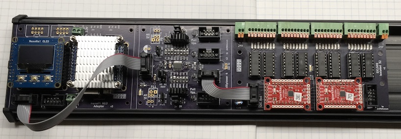

Advanced Central Switch Interface
April 2018
Introduction
This article is an overview of a hardware system I developed to interface a moderately large number (up to 128) of switches and LED indicators to any ethernet accessible master automation controller.
I will first give a brief overview and then I will proceed with requirements, analysis, design, and implementation that led me to this solution.
Note that I am not a Hardware Engineer by trade. I'm a retired Software Engineer with a long background in electronics and, at best, I consider myself an advanced level electronics hobbyist. While I have prototyped, built, and tested the hardware you are about to see, I make no guarantees whatsoever. You get a bit more than what you paid for.
The software that I developed has not been publicly released. It is based on a large personally-developed framework, written in C, that has evolved for more than 25 years. I will however provide the bare essential information for how to talk to the hardware through a Linux application (and at a future date, FreeBSD).
Brief Overview of the Hardware

The 3 modules that form the basis of this system.
- The brains - NanoPi NEO Adapter - V3
- 1.2GHz quad-core ARM with 512MB memory and ethernet
- Shown with a NanoHAT OLED module
- I2C Multiplexer
- Only needed if you want more than 32 switches & LED indicators
- SX1509 Isolated 32 Interface
The NanoPi exposes a single I2C bus which is then multiplexed into 4 channels, each containing up to 2 interface boards for a maximum of 128 switch inputs and 128 LED indicator outputs. Designed with Wattstopper LVSW wall switches in mind.
The design supports interrupt-driven switch activity detection. A SX1509 detects whatever change is programmed and generates an interrupt that passes through the multiplexer to the CPU. Software must then scan the multiplexer to discover which channel(s) have interrupts and then scan each SX1509 to find the pin(s). This allows scaling far beyond what is needed and leaves the processor available to implement whatever functionality is desired.
I do not have overall cost to build information. Lots of parts came from my inventory. The NanoPi NEO and heatsink are under $20US (in 2018). The board costs from OSHPark are on the individual board pages. A large system is not inexpensive but it is cheaper - and far more capable - than anything else on the market.
Note that there is nothing about this design that requires the use of the NanoPi NEO. Anything that can talk 3.3V level I2C and a couple of I/O pins can be used. BeagleBone Black, Raspberry Pi, or even a simple ARM or AVR board. And, come to think of it, with the right interfaces (like an I2C to USB dongle), any computer could be used.
Requirements
New Home Construction
As my wife and I approach our senior years we are in the process of building our "last"/"forever" home. We intend to live there as long as possible - possibly as much as 30 years. I'm disabled and likely to be fully wheelchair bound at some point in the future.
Automation has an attraction for many non-disabled people but its importance grows for those of us with limited mobility. Even the simplest routine task can become burdensome when repeated. Disabled people confront problems that others would simply never think of. Automation can make a huge difference.
The needs combined with knowledge and ability opens up a wealth of possibilities for automation.
Affordability
Like most people we have finite resources available to build a dream home and that includes a dream automation system. While we are comfortable we are not multi-millionaires! Our choice was either to DIY our automation system or not have one.
Automation Architecture
Over the length of our stay the technology that underlies our automation will probably evolve and outright be replaced several times. With certainty this also means that vendors used for commercial products will change over time.
The "human interfaces" throughout the home will, however, not likely change nearly as much. One can plan on evolution, put in lots of conduit, run future-proof wiring, etc but it is still less easy to change dozens of wall switches.
These realities argue for simplicity of the devices scattered around the home in potentially large quantities. So the requirement is to keep the brains and complexity in the central wiring closet and keep the many endpoints dumb.
This approach also provides a relatively easy path towards selling the home later. A custom/DIY system will no doubt be a hurdle to selling a property. But the dumb focus of switches and other scattered devices makes it a lot easier to simply rip out all the DIY stuff and replace with some commercial product that can be professionally supported for the next homeowner. I'd even like to think that commercial products will eventually become superior and I will replace with them!
Analysis
Available Systems
High-End Commercial Systems
It doesn't take much surveying of the commerical realm to realize that what is considered a "high end" or "advanced" residential automation system is not generally so sophisticated. And even worse, they are terribly stagnant and rarely advance in any significant way.
It also doesn't take long to realize that they are pretty expensive - mostly requiring a multi-millionaire level of resources. Not just for the initial purchase, wiring, and installation, but also for the ongoing "professional" services required to keep it going and make any changes desired. In fact, these systems are designed and marketed exactly so that they require a professional services model! One has to be significantly below my skill level or far beyond my resources to want to pay someone to modify the behavior of a switch on my wall.
Mid-Range Commercial (/DIY?) Systems
There are very few products that fit this category. A couple of years ago I stumbled across Loxone and a community of users.
I decided to use Loxone as my master automation controller. I could certainly develop software and I could cobble together a mix of commercial and home-brew hardware to reach a better solution. I just don't have the time before my home needs a working system.
However, I decided to not drink all the kool-aid. None, or few, Loxone proprietary wall switches. No Loxone proprietary wiring (Tree products). None, or few, Loxone proprietary wireless devices. And no proprietary dimmers. That all spells lock-in for a long time which just doesn't work for me.
Its become clear to many that Loxone has a strategic direction moving further towards a proprietary all-encompassing (at least trying to be) packaged product that will undoubtedly also mean increased emphasis on professional installation and services - just like the other high end players. Its been my experience, in any field, that a company trying to be and do everything generally results in doing nothing well.
When it comes to switch input in moderate numbers, the cost of Loxone rises quicky. I also question the scalability of the Loxone "Link", their extension module bus. Its 2 wires. I don't recall the details of what is known or suspected as to the protocol but I suspect it is typical of PLC designs in that it is a polled bus. While a polled approach has its uses, especially when we are talking about the very fringes of any system, it is not something that scales well and in fact is a definite no-no to people like me that have developed large scale systems. Its just slow and bloody inefficient. I recall seeing something about the minimum polling intervals growing longer in Loxone. This may have just been for specific types of Extensions but that is generally a "solution" to a locked hardware design with scalability problems.
For all those reasons, an alternative for switch input is needed. Switch response needs to be fast no matter how many switches in the system.
Low-End Systems
Low-end, usually wireless only, mass market commodity systems are out of my scope of interest. I've got a moderate sized Insteon setup in my current home; never again.
Alternatives for Switch Input
Thanks to community input I became aware of Elexol products. Some are using them to translate switch input into ethernet packets that are fed to Loxone. As commercial products go, these aren't bad. Less expensive than Loxone inputs although the cost adds up when adding appropriate I/O adapters. For example (available in the US from Saelig):
- Elexol io72 ~$155US
- Elexol 8 Opto Input ~$38US
- Several output buffer boards $25-$35US
You will find that these are not a great match for the Wattstopper LVSW switches. The Opto Input board requires a high signal and thus an external pullup resistor to work with LVSW. The output boards (possibly one exception) are wired so they pull to ground.
The io72 has 72 pins total. None of them have any intelligence for LED driving - just on/off (not even PWM). If one wanted to use this with individually controllable indicator LEDs on the LVSW, the io72 with 4 input boards and 4 output boards would handle 32 switches and 32 LEDs at a cost of approximately $427US or $13+ per switch. A comparable maxed-out config would require 4X as much or $1,708US.
As I said, I don't have a complete cost for my design but I'm certain it is significantly less. However, given the time and effort involved in design/testing/building/programming, I would rather have purchased a commercial product at a resonably higher cost had one been available with good features.
Also consider that the Elexol are all screw terminal connections. Doesn't seem like a big deal unless you have a LOT of them to connect!
The end result would be a very basic mapping of I/Os to ethernet. Anything more sophisticated requires processing at the other end of the ethernet message.
Taken all together, there has to be a better solution.
Design
My Standard I2C Connector
Modularity is good! In this case it lets one use whatever CPU is desired and to scale the total number of switches as desired. It also allows modules to be used for other purposes.
A modular design needs a way to interconnect the modules. Cost, efficiency, scalability, and availability of parts all drive one towards I2C for this application. There are other I2C connector systems out there but they all suffer from several problems. These modules are therefore designed to use my Standard Connector for I2C. In addition to I2C connectivity this also carries power and reset and interrupt signals.
SX1509 I/O Adapter Board
There are 2 of my I2C bus connectors so that it can be daisy-chained. Since the SX1509 has only 4 possible addresses and there are 2 of them on each board, only 2 of these boards can be on the same bus.
This board consists of compromises.
- SparkFun SX1509 Adapters
- Sure, I would have preferred a design with the chip right on the board. But I don't have a SMD reflow oven and I'm getting old (eyesight and dexterity are fading). All I have is a cheap hot air soldering station. I tried a version of the board with the chip directly mounted. Sometimes I was successful, sometimes I wasn't. This chip is pretty small! I decided to sacrifice elegance and efficiency.
- DIP Opto Isolators
- SMD LEDs and resistors
- Are small but manageable (1206 size) with a hot air gun. Through hole components would have taken up too much space and PCB space isn't free.
- The I/O connectors
- Not as commonly available as screw terminals but will make the job a lot easier and denser with these kinds of quantities. They are available from various sellers on eBay and Aliexpress.
I2C Multiplexer Board
A straightforward I2C multiplexer. Lots of optional configuration options through jumper selection. Some of which don't apply to this particular application (for example selectable 3V/5V on each channel).
In the name of space efficiency this also uses a lot of SMD components which are again reasonable to deal with (1206 sizes).
Brains
Again I'll emphasize that anything with 3.3V I2C and 2 I/O pins can be used for this application.
I'm an old Unix developer (although not quite this). I started with big iron and evolved as the industry exploded - both upscale and downscale. I value my time and my hard-earned scars and I would rather use the same (resonably) standard ecosystem at any scale. I've played with tiny microcontrollers (AVR, ARM, Arduino-class) and a couple of nice RTOS for them (Cosa, Nuttx) but despite an enormous amount of work they are... well... still too damn limiting. I want to build the applications I need and I can't spend the rest of my life enhancing this kind of thing to do what is commonly available elsewhere.
There are only really two areas where those tiny solutions had interest for me. One was cost. The other was the low-power aspect which also enables portability. This application has no need for portability or battery power. Now pershaps surprisingly, the cost benefit is literally... gone.
Go to AdaFruit - or anywhere else - and look for a small microcontroller. Then add an ethernet interface. Take note of the cost.
Now look at the NanoPi NEO. A 1.2GHz quad-core ARM 512MB ethernet module about 2" cubed that runs Linux out of the box (and FreeBSD with a little more work). For under $20US with a heatsink. I'll refrain from using a flowery word here but why the .... would anyone bother with those tiny crippled things? Granted the NEO has specs that look like a bazooka for an ant problem. There will be a lot of resources that are just idle or you could put a lot of other smarts on it at the same time.
Software
For now all I can offer is a brief review of what you would need to do from a Linux application to talk to this hardware. I've prototyped on the Linux that comes installed on the NanoPi NEO so this information is currently relative to that. I do intend to switch to FreeBSD and no doubt that will be slightly different.
GPIO
There are 2 GPIO pins that can be used to reset the I2C devices and receive interrupts. The ~RESET line is driven by GPIOG8 (NEO physical pin 16, software pin 200) and ~INTERRUPT is connected to GPIOA6 (NEO physical pin 12, software pin 6). In all the following description the pin involved is the software pin.
Linux unfortunately has no callable API to configure GPIO pins. You must write to control pseudo-files to interface to the kernel. These examples will show shell commands although your application would obviously open the files and write text commands to it.
First you need to export GPIO pins to make them visible to the application:
echo 200 >/sys/class/gpio/export
echo 6 >/sys/class/gpio/export
after which /sys/class/gpio/gpio200 and /sys/class/gpio/gpio6 will appear.
Then configure 200 for reset and 6 for interrupt:
echo 0 >/sys/class/gpio/gpio200/active_low
echo out >/sys/class/gpio/gpio200/direction
echo 0 >/sys/class/gpio/gpio6/active_low
echo in >/sys/class/gpio/gpio6/direction
echo falling >/sys/class/gpio/gpio6/edge
To reset you simply set the value of software pin 200 to low, wait, and set to high:
echo 0 >/sys/class/gpio/gpio200/value
sleep 1
echo 1 >/sys/class/gpio/gpio200/value
To receive interrupts /sys/class/gpio/gpio6/value must be kept open and be monitored
with poll(2) for a POLLPRI event. A read must be done then to consume the interrupt
event. This doesn't do anything other than notify the application that there was an
interrupt somewhere; you then have to use I2C to scan the multiplexer and all
the SX1509 interrupt registers to figure out all the pins that triggered and process
accordingly. Likewise you have to make sure that the interrupts are cleared in each
device (if memory is correct the act of reading the register clears the multiplexer
but depending on how the SX1509 is configured a register write may be required).
I2C
I2C communications is done via ioctl against a file descriptor open for the
I2C bus. In this application, the NEO only exposes bus 0 so the device is /dev/i2c-0.
To read from a I2C device you fill out struct i2c_msg structure.
In order to read you must write the device with the register address that you want to start reading from. Then you specify,
in the second structure of the array, where to put the results. Then this array is referred to by
struct i2c_rdwr_ioctl_data structure. Something like this:
struct i2c_msg msgs[2];
struct i2c_rdwr_ioctl_data io;
msgs[0].addr = i2c-device-address-to-read;
msgs[0].flags = 0;
msgs[0].len = 1; /* size of register address variable */
msgs[0].buf = &variable-containing-register-address;
msgs[1].addr = i2c-device-address-to-read; /* again */
msgs[1].flags = I2C_M_RD;
msgs[1].len = number-of-bytes-to-read;
msgs[1].buf = results-buffer;
io.msgs = msgs;
io.nmsgs = 2;
ioctl(fd, I2C_RDWR, &io);
To write to a I2C device you do something similar although with only a single message structure and importantly the first byte of data must be the device register to start writing to. Something like this:
char bytes[msg-size + 1];
struct i2c_msg msg;
struct i2c_rdwr_ioctl_data io;
bytes[0] = i2c-device-register-to-start-write;
bytes[1...] = ...data-to-write;
msg.addr = i2c-device-address-to-write;
msg.flags = 0;
msg.len = 1 + msg-size;
msg.buf = bytes;
io.msgs = &msg;
io.nmsgs = 1;
ioctl(fd, I2C_RDWR, &io);
When using the multiplexer a number of additional issues add to the complexity. First off, the default multiplexer specified in this design shares its first two instance I2C addresses (0x70, 0x71) with the last two instance addresses of the SX1509. The multiplexer never goes away from the I2C address space; it just switches which channel all the other addresses are from. So in this design you really need to choose either 0x72 or 0x73 for the multiplexer to be able to see all possible SX1509s.
Another issue is that only one channel can be selected at a time. That's pretty obvious but imagine application(s) with multiple processes or threads all trying to play with I2C at the same time. For example, one implementation might have separate processes (or threads) for switch handling and another for LED indicator handling. The selection of the current channel and the operation(s) on the device are not atomic. Each sequence must be transactional. Lock the channel selection during the transaction.
In my software I have a separate thread that does nothing but handle hardware interrupts. When an interrupt arrives it has to lock the channel selection, probe the multiplexer to discover which channels are interrupting, switch channels one-by-one and scan all known devices on the channel looking for interrupting pins. Only after the entire tree is examined can the multiplexer be released. As actual interrupting pins are found, they are queued up for handling by another thread after the interrupt scan is completed (and multiplexer released). If your design puts other unrelated I2C devices on the other side of the multplexer then you will need a system-wide mulitplexer lock manager.
Implementation
The project has turned out better than I expected. And I haven't even begun to program the advanced special effects possible with the LED indicators. Switch actions appear at the application with no discernible delay. CPU load, as one might expect, is nothing - idle all the time.
I've got a lot more work to do to fully design and implement the software. I have every expectation that it will be fairly easy to do some pretty advanced things. Bhaviors that come to mind:
- Short tap and long press (could even have multiple durations of long press do different things)
- Multi-tap
- Chords (2 or more pressed at the same time)
- Modes (altering the behavior of other switches; for example, a LVSW to select mode for a DCC2 switch)
And, of course, all that intelligence should result finally in a UDP packet (for example) being sent to Loxone or any other automation system.
The thought has also crossed my mind that, along with an ethernet to DMX bridge, this could be a complete intelligent lighting system. Or, eventually, a complete Loxone MiniServer replacement.
The use of a *nix base means just about any programming or scripting language can be used. A variety of methods are available for communicating with other controllers (even MQTT or IFTTT). And with it all a robust programming and debugging environment. Yes, I've even used a graphical source level debugger to remotely debug my application on the NEO.
Conclusion
This is closer to the kind of product that should be available commercially (note that the project schematics and boards are marked as Creative Commons Attribution-NonCommercial-ShareAlike-3.0 licensed). Its far from perfect but it will do the job.